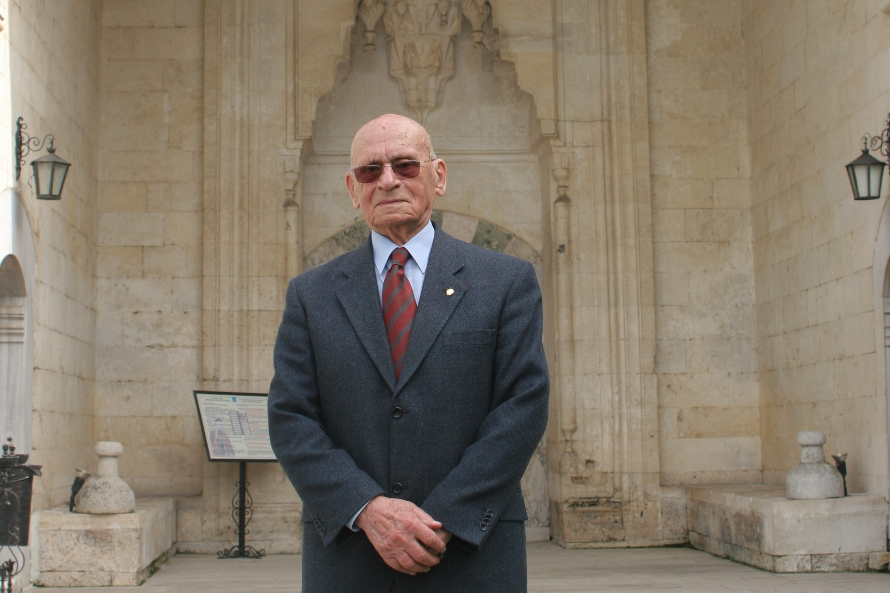
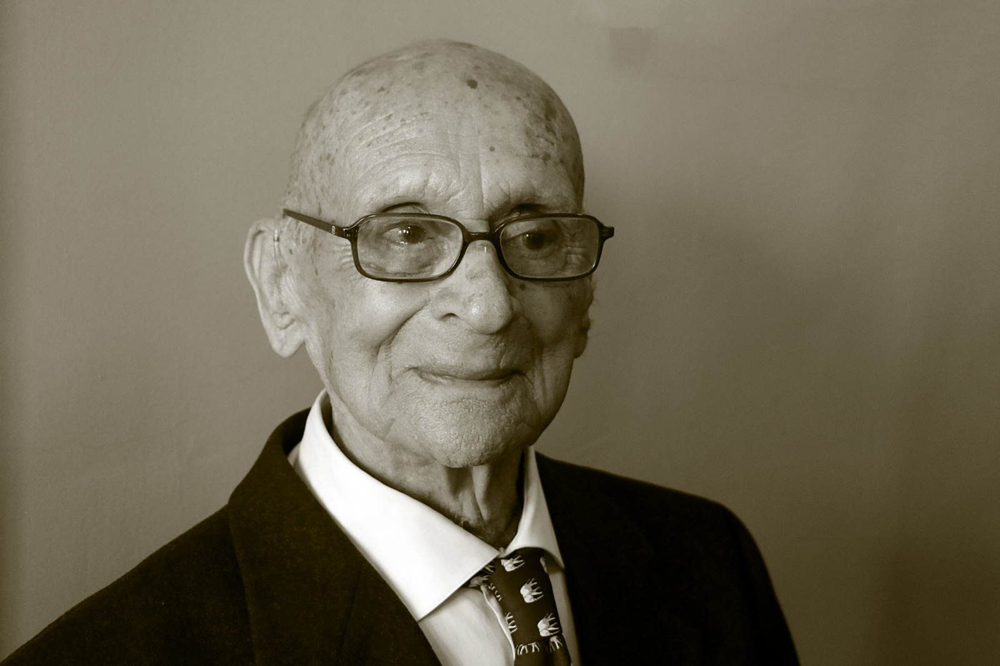

EDİRNE'YE ADANMIŞ BİR ÖMÜR
Dr. Ratip Kazancıgil — Hekim, Tarihçi, Müzemizin Kurucusu


Dr. Ratip Kazancıgil — Hekim, Tarihçi, Müzemizin Kurucusu
"Edirne'nin Ratip Hocası"
Öyle bir kişi düşünün ki, 97 yıllık uzun ömrünün 65 yılını aralıksız olarak yaşadığı ve sevdiği şehre adamış olsun. 1950 yılında genç bir hekim olarak geldiği Edirne'ye sadece hekim olarak değil; değişik kurum ve kuruluşlarda yönetici, öğretmen, kültür ve sanat adamı, bilim adamı, tarihçi ve araştırmacı olarak hizmet etsin.
"Edirne'nin Ratip Hocası" işte böyle biriydi. Çok sevdiği bu şehre ömrünü adadı... Hizmet etti, araştırdı, okudu, yazdı, gelecek kuşaklara onlarca bilgi birikimi, deneyim ve eser bırakarak bu şehrin havasına ve suyuna veda edip gitti.

Edirne tarihi ve kültürü denince akla ilk gelen isimlerin başında, genç bir radyolog olarak atandığı Edirne'den bir daha ayrılmayan Tosyavizade Dr. Rıfat Osman Bey'in yanı sıra onun öğrencisi Ord. Prof. Dr. Süheyl Ünver gelir. Bu ikisini tamamlayan asıl önemli halka ise Süheyl Ünver'in öğrencisi ve üniversitemizin eski öğretim üyesi Dr. Ratip Kazancıgil'dir.
Bu üç isim aslında Edirne sevgisinin bilime, tarihe, kültüre ve sanata dönüşen temsilcileridir. Üçü de Edirne sevgisinin bayrağını birbirine devreden altın üçgenin birer parçalarıdır. Üçü de dönemlerinin kilometre taşlarıdır. Üçü de iflah olmaz birer Edirne sevdalısıdır ve üçünün de ömrü Edirne ile ilgili eşsiz araştırmalar yaparak ve sayısız eserler bırakarak geçmiştir.
Tarihçi Dr. Rıfat Osman Bey 1933 yılında; "Ben artık Edirne için yaşıyorum" diyerek ömrünün önemli bir kısmını Edirne'ye adayan Süheyl Ünver ise 1986 yılında veda ederek ayrılmışlardı bu çok sevdikleri şehirden. Sacın üçüncü ayağı olan Dr. Ratip Kazancıgil hocamız ise tam 97 yaşında veda etti çok sevdiği Edirne'ye ve sevenlerine.
Şu an Yıldırım Mezarlığı'nın şehri gören yamacında 17. Yüzyılın Edirne Şehir Tarihçisi Abdurrahman Hibri'nin mezarının yanında ve onunla birlikte sonsuza kadar çok sevdiği bu kadim kenti seyredecek.

1950'li yıllardan itibaren Edirne Darüşşifasını müzeye çevirmek için uğraşan, hemen hemen her dönem bu düşüncesini ısrarla dönemin yöneticilerine açan Dr. Ratip Kazancıgil, nihayet 1990'lı yıllarda Trakya Üniversitesi'nin desteğiyle bu amacına ulaşmış ve 23 Nisan 1997 yılında Sağlık Müzesinin hayata geçirilmesine vesile olmuştur.
Müzenin kuruluşundan, vefat ettiği 12 Ağustos 2017 yılına kadar ilgisini hiçbir zaman müzeden kesmemiş, bu tarihi yapıdaki odasında Edirne için çalışmaya ve üretmeye devam etmiştir.
Kazancıgil, 1920 Malatya doğumludur. İlk ve orta öğrenimini doğduğu bu ilde tamamlamış ve 1943 yılında İstanbul Üniversitesi Tıp Fakültesi'nden mezun olarak doktorluk hayatına başlamıştır. İlk görev yeri Aydın Merkez Sıtma Savaş Tabipliği'dir.
Daha sonra 1950 yılında Edirne'ye atanmış ve Trakya Sıtma Savaş Bölge Başkanlığı görevini yürütmüştür. 1960–85 yılları arasında Edirne Sağlık Müdürlüğü görevini aralıksız yürüten Kazancıgil, 1979–81 yıllarında, tam 61 yaşındayken İstanbul Cerrahpaşa Tıp Fakültesi'nde Deontoloji ve Tıp Tarihi doktorasını tamamlamış ve ardından yardımcı doçent olarak Trakya Üniversitesi Tıp Tarihi ve Deontoloji Anabilim Dalı Başkanlığı'nı yürütmüştür.
İkinci kez emekliliğin ardından 1992 yılından beri de yine üniversitemizin bu anabilim dalındaki görevine gönüllü ve fahri olarak devam etmiştir. Edirne'de başta Edirne'yi Tanıtma ve Turizm Derneği ve Edirne Musiki Derneği olmak üzere birçok derneğin kuruculuğunu, başkanlığını ve yöneticiliğini yaptı.
Çok iyi bildiği Osmanlıcasıyla tüm ömrü boyunca okudu, araştırdı, çevirdi ve yayınladı. Hayatının son dönemlerinde güçlükle görmesine rağmen durup bir kenara çekilmedi, okumaya ve araştırma yapmaya devam etti. Son bir yıl büyüteçlerle bile yazıları göremez olmuştu. Ama her şeye rağmen öğrenme ve araştırma heyecanından hiç bir şey kaybetmedi. Hâlâ, başta yıllardır üzerinde çalıştığı Edirne Ansiklopedisi olmak üzere kafasında çok sayıda kitap, çeviri ve proje vardı.
| Dönem / Başlık | Bilgi |
|---|---|
| Doğum | 1920, Malatya |
| Vefat | 12 Ağustos 2017, Edirne |
| Tıp Mezuniyeti | 1943 – İstanbul Üniversitesi Tıp Fakültesi |
| Edirne'ye Geliş | 1950 – Trakya Sıtma Savaş Bölge Başkanlığı |
| Sağlık Müdürlüğü | 1960–1985 (25 yıl aralıksız) |
| Tıp Tarihi Doktorası | 1981 – Cerrahpaşa Tıp Fakültesi |
| Müze Açılışı | 23 Nisan 1997 – Sultan II. Bayezid Sağlık Müzesi |
| Yayınlanmış Kitap | 30+ kitap, 100+ makale ve bildiri |
| Edirne'de Hizmet | 65 yıl kesintisiz |
← Kaydırın veya ok tuşlarını kullanın →